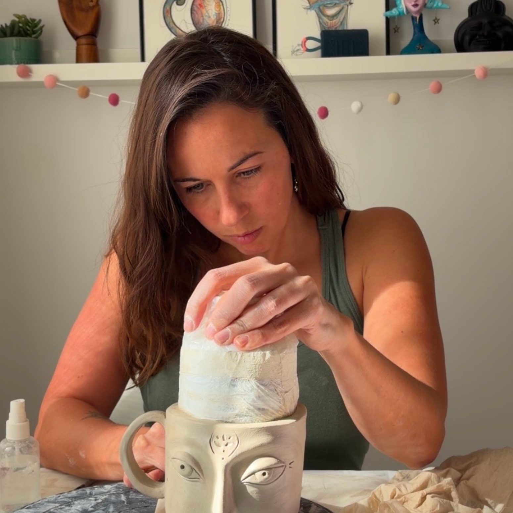

English
I'm Stefania Spangenberg, the artist behind Chundra.
I was born in Uruguay, grew up in Argentina, and currently live in Spain. From a young age, I had this feeling of not completely belonging anywhere, which ultimately makes me feel like I belong everywhere, wherever I choose to be. Being firmly grounded in the land I inhabit creates my sense of belonging.
I grew up in the oldest neighborhood in Buenos Aires, where history and culture are in every little corner, captivating me as I discovered them at every turn. Life presented me with many challenges, including a near-death experience, and everything that happened helped me become a stronger version of myself.
My work focuses on creating pieces that invite us to reflect and live a more complete life where the unsettling inner voices are listened to too. Inspired by ancient art and modern culture, I wonder how our culture would change if we began to value the wisdom lost in the past. Themes such as gender, relationships, society, and ethics are recurring themes in my work. Many of my works are created using mixed media; I'm interested in illustration, painting, sculpture, and what happens when they all come together, how the different fields relate to one another.
I see how much of who we are is shaped by our routines, by the things we do, no matter how small. I see how much is lost in the way we currently do things, how much pause, how much of the present moment is lost. Some of my works seek to recapture these moments, to humble us, to bring us closer to the divine. When religions crumble, our sense of purpose also crumbles; we need to find meaning, pleasure, and gratitude in what seems small, we need to reconnect with what is truly immense.
